You already know how to make basic plots using ggplot functions. We’ll now dive deeper into data visualisation using ggplot2 package and its extensions.
Every plot in ggplot consists of 7 parts that together serve as instructions on how to draw a plot:
To produce any plot, ggplot needs data, mapping and at least one layer. The other parts have some defaults, but often need adjustments for a better appearance.
Data - preferably as a tidy tibble
Mapping - instructions, how the data should be displayed, usually defined using aes() to pair graphical attributes of the plot with the data, typically x and y axis with specific variables from the data, but also colours, sizes, shapes, whatever should reflect some data variable in the resulting plot
Layers - graphical representation of the data, usually defined by the geom functions, e.g. geom_point(), geom_line(), geom_bar(), geom_boxplot(). Note that layers are added to the plot in the order you write them in the code, so the last geom you added will be displayed on top
Scales - scale graphical attributes to the desired values, responsible for setting the limits of the plot, breaks, labels, colour palettes, etc., to modify the defaults, use scale functions
Facets - split data into smaller panels based on one or more variables
Coordinates - typically Cartesian coordinates (x and y axis), important to set for map projections or polar plots
Theme - controls the overall appearance of the plot, not controlled by the data, can be used for customisation of the legend position, background colour, sizes of axis labels and many more
We will again use the penguin dataset and play with the individual plot parts. In addition we will use some other packages, so please make sure you have them installed and loaded.
From Chapter 3, you already know how to visualise the relationship between the penguin bill length and bill depth.
penguins |>ggplot(aes(x = bill_length_mm, y = bill_depth_mm, fill = species, shape = species)) +geom_point() +geom_smooth(aes(colour = species), method ='lm', show.legend = F) +scale_shape_manual(values =c(21, 22, 24)) +labs(x ='Bill length (mm)', y ='Bill depth (mm)', fill ='Species', shape ='Species') +theme_bw()
But what if we now want to look at the differences between males and females in addition? We could change the definition of the fill and colour aesthetics, so that they display sex and keep just shape for species identity:
penguins |>ggplot(aes(x = bill_length_mm, y = bill_depth_mm, fill = sex, shape = species)) +geom_point() +geom_smooth(aes(colour = sex), method ='lm', show.legend = F) +scale_shape_manual(values =c(21, 22, 24)) +labs(x ='Bill length (mm)', y ='Bill depth (mm)', fill ='Sex', shape ='Species') +theme_bw()
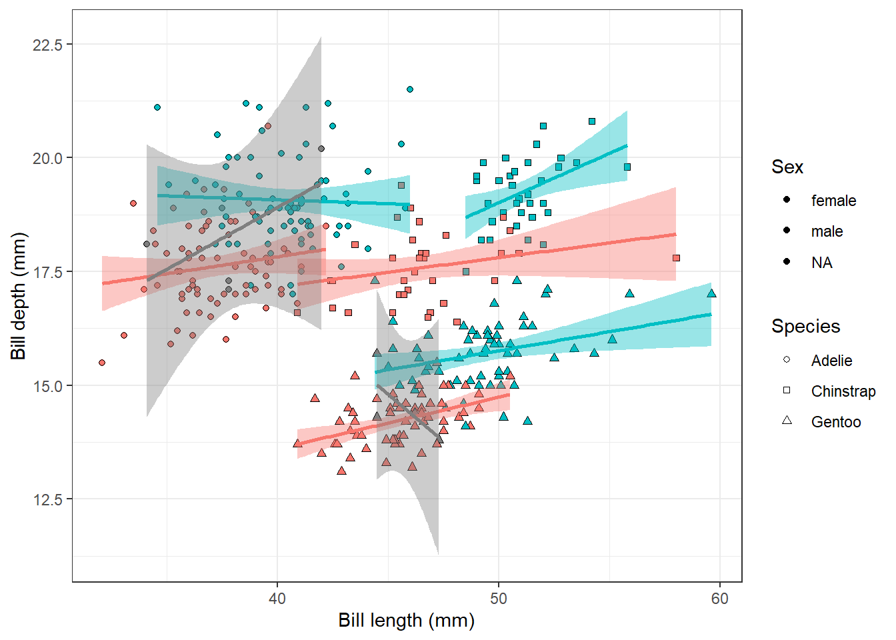
But as you see, it gets a bit hard to read the plot. There are some NA values in the sex column, which would be better removed so that they do not add a mess to the plot. And what about splitting the plot into three smaller plots, one for each species? This is where facetting comes into play.
penguins |>filter(!is.na(sex)) |>ggplot(aes(x = bill_length_mm, y = bill_depth_mm, fill = sex, shape = species)) +geom_point() +geom_smooth(aes(colour = sex), method ='lm', show.legend = F) +scale_shape_manual(values =c(21, 22, 24)) +labs(x ='Bill length (mm)', y ='Bill depth (mm)', fill ='Sex', shape ='Species') +facet_wrap(~species)+theme_bw()
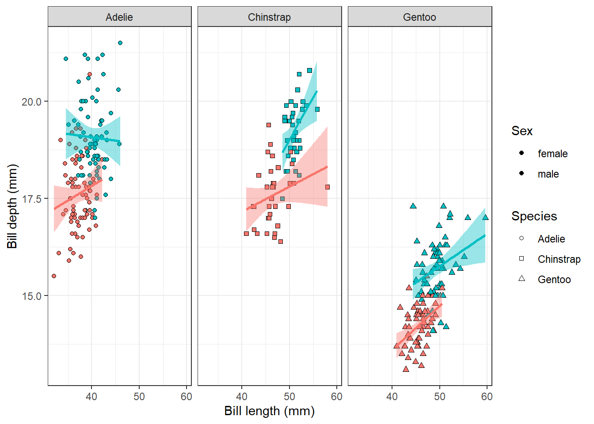
Much better, but do we really need the different shapes for different species if we have them now in different facets? It would be better to add shape differentiation to the sex variable, as not everyone is able to distinguish colours. It might also help in the legend, where we now have just black dots for both levels.
penguins |>filter(!is.na(sex)) |>ggplot(aes(x = bill_length_mm, y = bill_depth_mm, fill = sex, shape = sex)) +geom_point() +geom_smooth(aes(colour = sex), method ='lm', show.legend = F) +scale_shape_manual(values =c(21, 22)) +labs(x ='Bill length (mm)', y ='Bill depth (mm)', fill ='Sex', shape ='Sex') +facet_wrap(~species)+theme_bw()
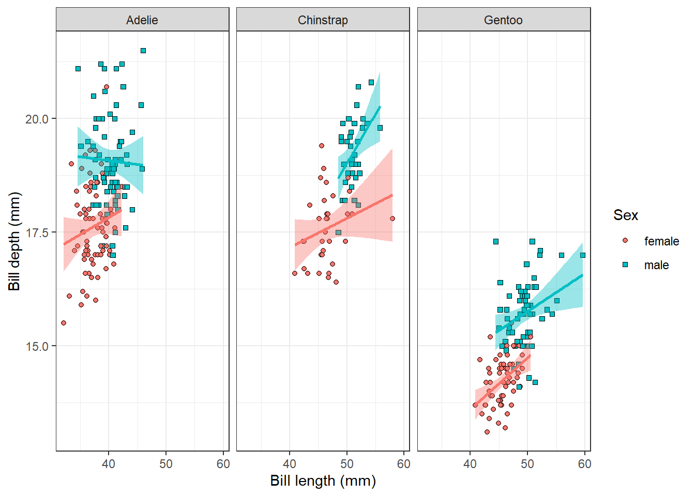
We can now clearly see that for Adélie penguins, there is a positive relationship between bill length and bill depth for females, but not for males. On the other hand, for Chinstrap penguins, the relationship is stronger for males than for females.
6.2 Data argument
Till now, we have worked just with one data frame for the whole plot. You might remember that it is possible to place aesthetic mappings (aes()) either in the ggplot() call, and then it works for the whole plot, or in a geom function, which then overwrites the global mappings for that layer only. The same is possible for the data argument. We can define a different dataset for a certain layer to add, e.g., points from another dataset or highlight a subset of the data.
As an example, we will draw a scatterplot of penguin body mass vs flipper length, where we highlight penguins from the Dream Island with bigger red points:
penguins |>ggplot(aes(body_mass_g, flipper_length_mm))+geom_point()+geom_point(data = penguins |>filter(island =='Dream'), colour ='red', size =3)+theme_bw()+labs(x ='Body mass (g)', y ='Flipper length (mm)')
Warning: Removed 2 rows containing missing values or values outside the scale range
(`geom_point()`).
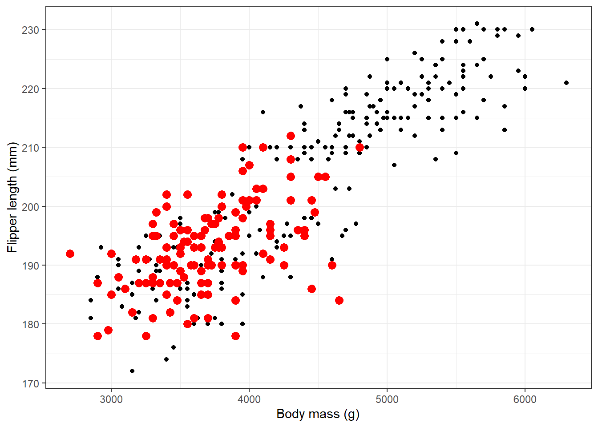
Note that we added specifications of the point appearance of the highlighted point in the geom_point() function outside the aes(). This means the characteristics are fixed for that layer and do not change according to the data. All the points of that layer will always be red and of size 3.
6.3 Scales
Scale functions always follow the pattern scale_{aesthetic}_{type}. We already used scale_shape_manual() to manually rewrite the default shapes used in the plot. We can use scales to modify values, limits, breaks or labels of any aesthetics in our plot, typically colour, fill, and shape. To define desired values on your own, you can use manual scale definition, but there are many other types, e.g. continuous (useful, e.g., for defining labels for continuous variables), discrete (e.g. labels for discrete variables), gradient (e.g. for defining colour gradient for continuous variables). scale_x_{type} and scale_y_{type} are useful to define axis limits, ticks and labels.
We will use the example of penguin body mass vs. flipper length and modify different scales of this plot. First of all, we will show with different colours on which island the penguins were measured. To change the default colours, we can define our own colours using scale_fill_manual() and the values argument inside, similarly to what we did for the shape before. In the values argument, we can define any color using its HEX reference. Some colors also have a name, which might be used instead, see this website for their list.
penguins |>ggplot(aes(body_mass_g, flipper_length_mm, fill = island))+geom_point(pch =21)+scale_fill_manual(values =c(Dream ='#7FFFD4', Biscoe ='orchid3', Torgersen ='deepskyblue2'))+theme_bw()+labs(x ='Body mass (g)', y ='Flipper length (mm)', fill ='Island')
Warning: Removed 2 rows containing missing values or values outside the scale range
(`geom_point()`).
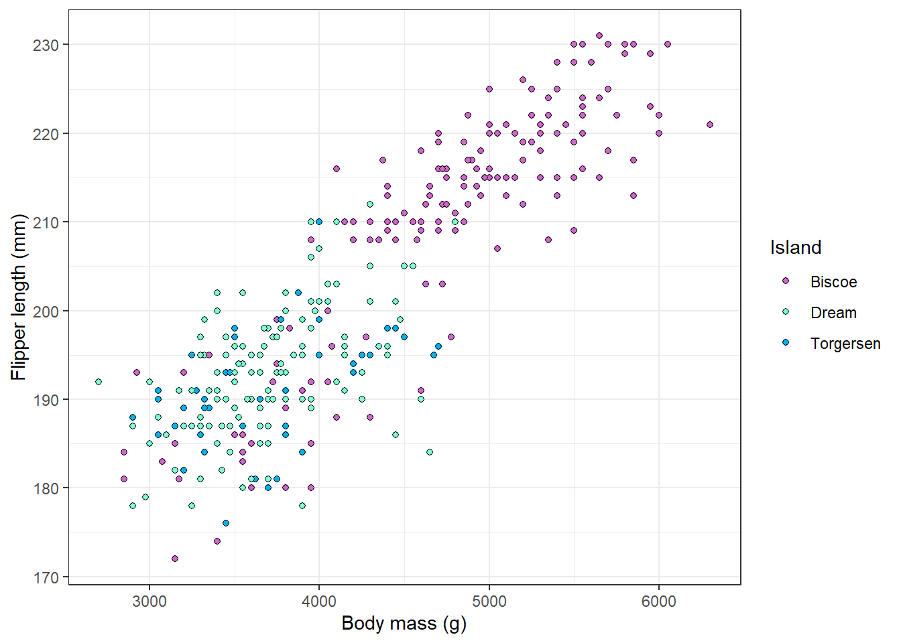
But we can also use a predefined colour scale, e.g. from colour brewer using scale_fill_brewer(). We can also modify the labels in the legend by using the argument labels. Let’s say we want to add the word ‘Island’ to each label:
penguins |>ggplot(aes(body_mass_g, flipper_length_mm, fill = island))+geom_point(pch =21)+scale_fill_brewer(type ='qual', palette =7, labels =c('Dream'='Dream Island', 'Biscoe'='Biscoe Island', 'Torgersen'='Torgersen Island'))+theme_bw()+labs(x ='Body mass (g)', y ='Flipper length (mm)', fill ='Island')
Warning: Removed 2 rows containing missing values or values outside the scale range
(`geom_point()`).
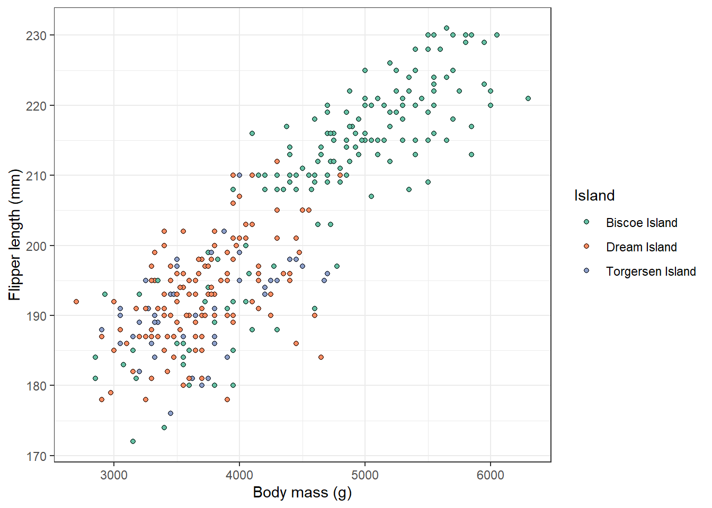
We used type = 'qual' inside scale_color_brewer() to use colours appropriate for discrete values. You can experiment with many more such colour scales that are already available, e.g., here.
Instead of colouring the points according to the island, we can also use colours to show a numerical variable, e.g. year when the measurement was taken:
penguins |>ggplot(aes(body_mass_g, flipper_length_mm, fill = year))+geom_point(pch =21)+theme_bw()+labs(x ='Body mass (g)', y ='Flipper length (mm)', fill ='Year')
Warning: Removed 2 rows containing missing values or values outside the scale range
(`geom_point()`).
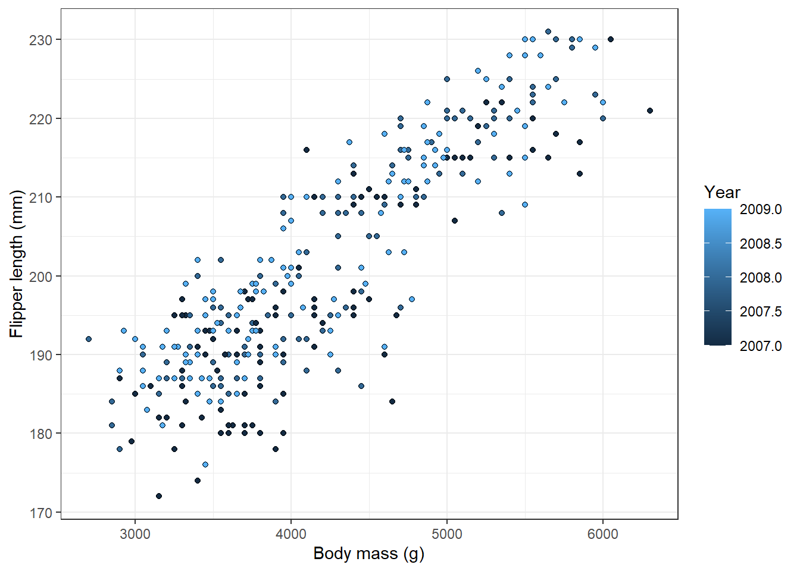
Note that the plot automatically chooses a continuous colour scale instead of the discrete one before, and the legend now shows a range from the lowest to the highest value. But for the year, it doesn’t really make sense to show decimals. We can modify this using the argument breaks inside scale_fill_continuous():
penguins |>ggplot(aes(body_mass_g, flipper_length_mm, fill = year))+geom_point(pch =21)+scale_fill_continuous(breaks =c(2007, 2008, 2009))+theme_bw()+labs(x ='Body mass (g)', y ='Flipper length (mm)', fill ='Year')
Warning: Removed 2 rows containing missing values or values outside the scale range
(`geom_point()`).
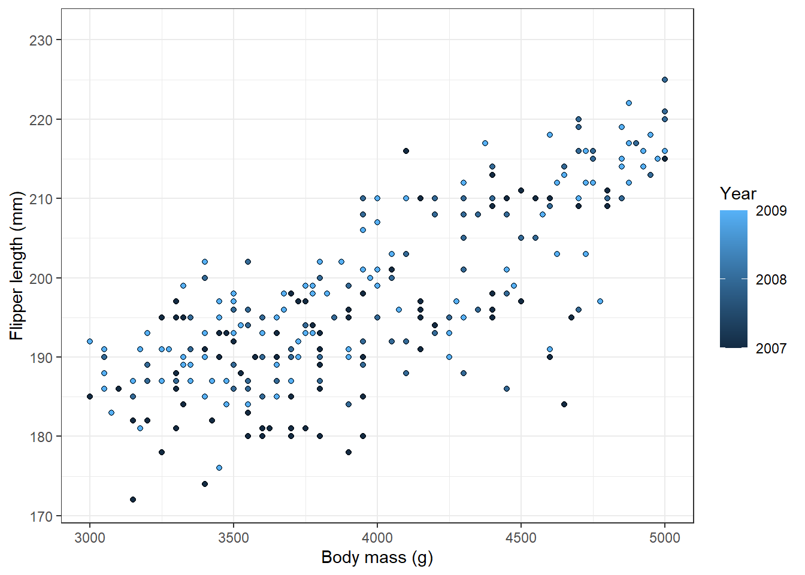
Scales are also useful to set limits, breaks or labels on the plot axes. For example, we might want to zoom only to the penguins with body mass between 3000 and 5000 g:
penguins |>ggplot(aes(body_mass_g, flipper_length_mm, fill = year))+geom_point(pch =21)+scale_fill_continuous(breaks =c(2007, 2008, 2009))+scale_x_continuous(limits =c(3000, 5000))+theme_bw()+labs(x ='Body mass (g)', y ='Flipper length (mm)', fill ='Year')
Warning: Removed 72 rows containing missing values or values outside the scale range
(`geom_point()`).
Note that when we do this, we get a warning message, indicating how many points were not displayed because they are outside the defined range. That’s just to prevent us from accidentally missing them.
It is even possible to transform the axis using the transform argument or shortcuts for commonly used transformations, e.g. scale_x_log10().
penguins |>ggplot(aes(body_mass_g, flipper_length_mm, fill = year))+geom_point(pch =21)+scale_fill_continuous(breaks =c(2007, 2008, 2009))+scale_x_continuous(transform ='log')+theme_bw()+labs(x ='Body mass (g)', y ='Flipper length (mm)', fill ='Year')
Warning: Removed 2 rows containing missing values or values outside the scale range
(`geom_point()`).
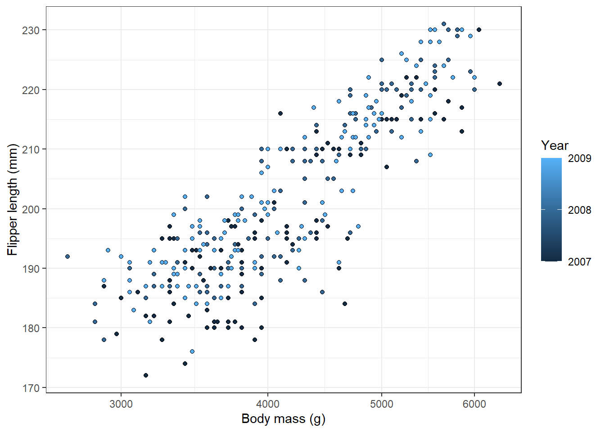
The scale_x_ and scale_y functions might also be used to change which ticks are displayed on the axes:
penguins |>ggplot(aes(body_mass_g, flipper_length_mm, fill = year))+geom_point(pch =21)+scale_fill_continuous(breaks =c(2007, 2008, 2009))+scale_y_continuous(breaks =seq(170, 230, 5))+theme_bw()+labs(x ='Body mass (g)', y ='Flipper length (mm)', fill ='Year')
Warning: Removed 2 rows containing missing values or values outside the scale range
(`geom_point()`).
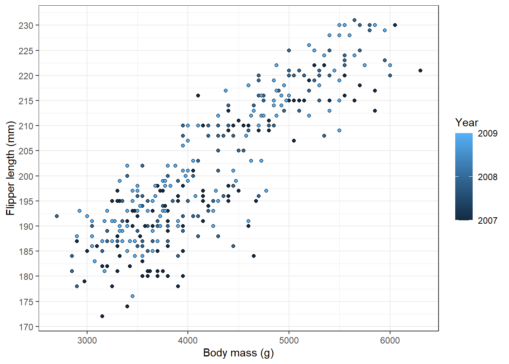
In addition to color, fill and shape of the points, we can also modify their size, or opacity. Here, we plot the penguing bill length vs bill depth and adjust the size of the points according to their body mass. In addition, we make the points a bit transparent using the alpha argument so that we can see the overlapping points.
penguins |>ggplot(aes(bill_length_mm, bill_depth_mm, fill = island, size = body_mass_g))+geom_point(pch =21, alpha =0.6)+theme_bw()+labs(x ='Body mass (g)', y ='Flipper length (mm)', fill ='Island', size ='Body mass (g)')
Warning: Removed 2 rows containing missing values or values outside the scale range
(`geom_point()`).
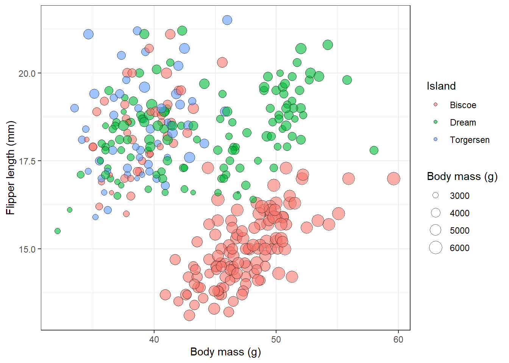
We can again play with the size aesthetics, e.g., modify the size of the smallest and largest points, using the scale_size_continuous() function.
6.4 Legend modifications
In all the plots we made so far, the legend was by default placed on the right side next to the plot. Sometimes it is helpful to move it somewhere else, for example, due to space constraints. Legend position might be modified inside the theme() function. We can move it to the bottom of the plot:
penguins |>ggplot(aes(body_mass_g, flipper_length_mm, fill = island))+geom_point(pch =21)+theme_bw()+theme(legend.position ='bottom')+labs(x ='Body mass (g)', y ='Flipper length (mm)', fill ='Island')
Warning: Removed 2 rows containing missing values or values outside the scale range
(`geom_point()`).
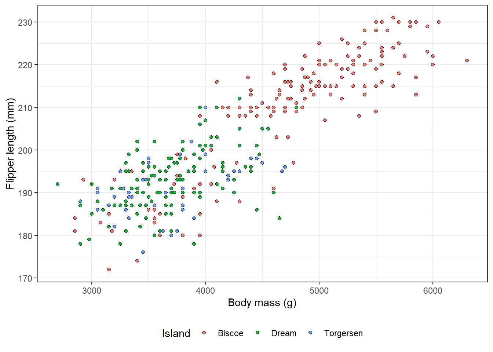
Sometimes, there is a space inside the plot, so it is possible to place the legend there and reduce the image size. In this case, we have to set legend.position = 'inside' and specify two arguments, legend.position.inside() and legend.justification.inside(). The values should indicate coordinates on the two axes and have values of 0-1, where 0 means the beginning of the axis and 1 the end. For example, 0, 0 means the bottom left corner of the plot, 1, 1 the top right corner.
penguins |>ggplot(aes(body_mass_g, flipper_length_mm, fill = island))+geom_point(pch =21)+theme_bw()+theme(legend.position ='inside', legend.position.inside =c(1, 0), legend.justification.inside =c(1, 0))+labs(x ='Body mass (g)', y ='Flipper length (mm)', fill ='Island')
Warning: Removed 2 rows containing missing values or values outside the scale range
(`geom_point()`).
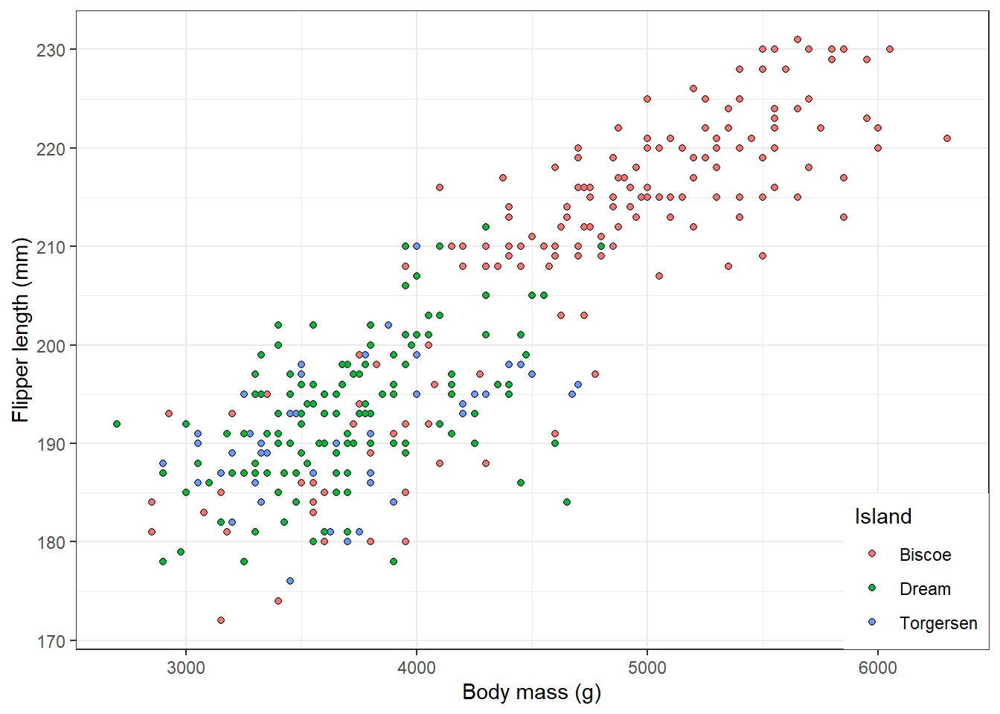
To remove the legend completely, set legend.position = 'none'.
The theme() function allows us to modify many more plot elements. We can remove any plot component by setting the argument for it to element_blank(), modify the text size, label angle, ticks length, background grid colour and much more. See the documentation for more details.
penguins |>ggplot(aes(body_mass_g, flipper_length_mm, fill = island))+geom_point(pch =21)+theme_bw()+theme(panel.grid =element_blank(), axis.title =element_text(size =14, face ='bold'), axis.text.x =element_text(angle =45))+labs(x ='Body mass (g)', y ='Flipper length (mm)', fill ='Island')
Warning: Removed 2 rows containing missing values or values outside the scale range
(`geom_point()`).
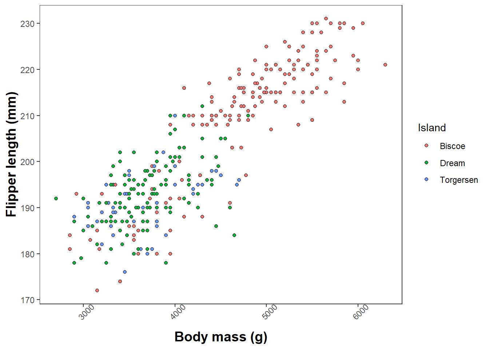
6.5 Factors and reordering
When using a categorical variable in a plot, the default order of the categories in alphabetical. However, that is not always what we want and it might be helpful to reorder the categories for the final presentation of our plots. For this, turning categorical variables to factors becomes especially useful. We can then use functions from the forcats package, whoch is also part of tidyverse to reorder the categories as desired.
For illustration, we will now use data on the characters from Star Wars coming with the dplyr package.
We can see here, that there are some very rare eye colors appearing only once. Using the fct_lump_min() function, we can group them together in a category ‘other’.
starwars |>mutate(eye_color =fct_lump_min(eye_color, min =2) |>fct_infreq()) |>ggplot(aes(y = eye_color)) +geom_bar()
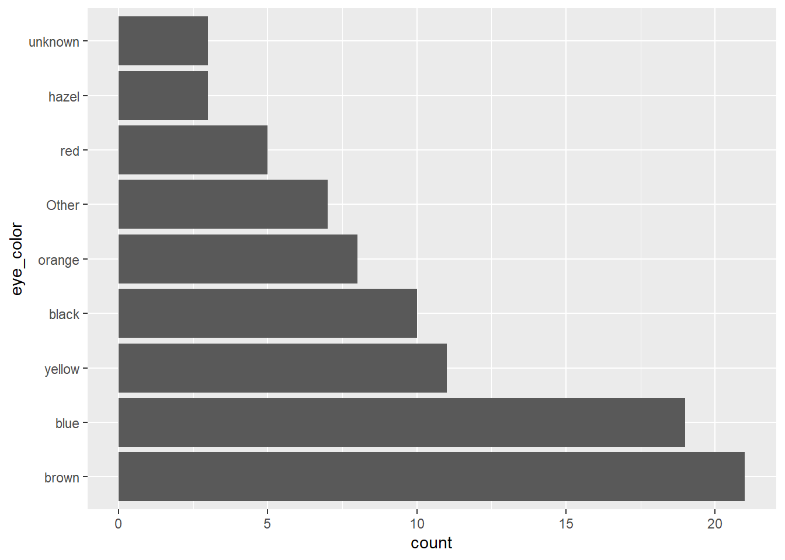
Now, we can look at the relationship between the eye color and total body mass (kg). We will first calculate the mean body mass for each category.
# A tibble: 9 × 2
eye_color mean_mass
<fct> <dbl>
1 black 76.3
2 blue 86.5
3 brown 66.1
4 hazel 66
5 orange 282.
6 red 81.4
7 unknown 31.5
8 yellow 81.1
9 Other 94.7
And then visualize the relationship. We will use geom_col(), where we specify the height of the bars in the plot by a numerical variable in our data. Note the difference between geom_bar() used previously, where we only specified one of x or y aesthetics and the other was calculated as a count of indivials in the given category. To order the columns from the smallest to the highest, we will use the fct_reorder() function. Inside the fct_reorder() function, we specify two arguments: the first specifies which variable should be reordered, and the second specifies which values should be taken to make the order. You can imagine this as if you first arrange the table according to the mean body mass, and then fix the order of the categorical variable (eye color) from this ordered table.
Sometimes it is useful to combine multiple plots in one figure with multiple panels. This might be easily done using the patchwork package.
library(patchwork)
(Please place this line at the top of your script to the other library() calls.)
Let’s say we want to make one figure showing the relationship between the penguin bill length and bill depth for the three penguin species, and a boxplot showing the distribution of body mass for individual species next to each other.
We will first create these two plots and save them to an object:
p1 <- penguins |>ggplot(aes(x = bill_length_mm, y = bill_depth_mm, fill = species, shape = species)) +geom_point() +geom_smooth(aes(colour = species), method ='lm', show.legend = F) +scale_shape_manual(values =c(21, 22, 24)) +labs(x ='Bill length (mm)', y ='Bill depth (mm)', fill ='Species', shape ='Species') +theme_bw()p2 <-ggplot(penguins, aes(x = species, y = body_mass_g, fill = species)) +geom_boxplot() +labs(y ='Body mass (g)', fill ='Species') +theme_bw() +theme(axis.title.x =element_blank())p1
`geom_smooth()` using formula = 'y ~ x'
Warning: Removed 2 rows containing non-finite outside the scale range
(`stat_smooth()`).
Warning: Removed 2 rows containing missing values or values outside the scale range
(`geom_point()`).
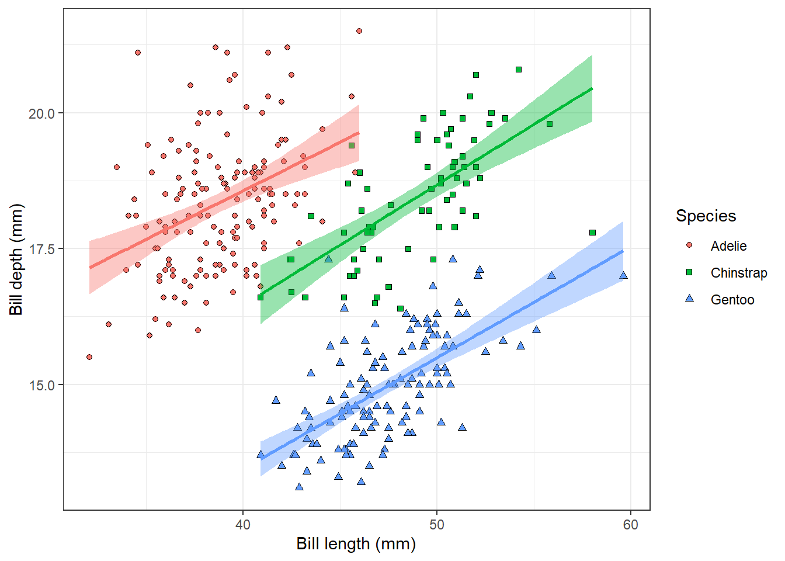
p2
Warning: Removed 2 rows containing non-finite outside the scale range
(`stat_boxplot()`).
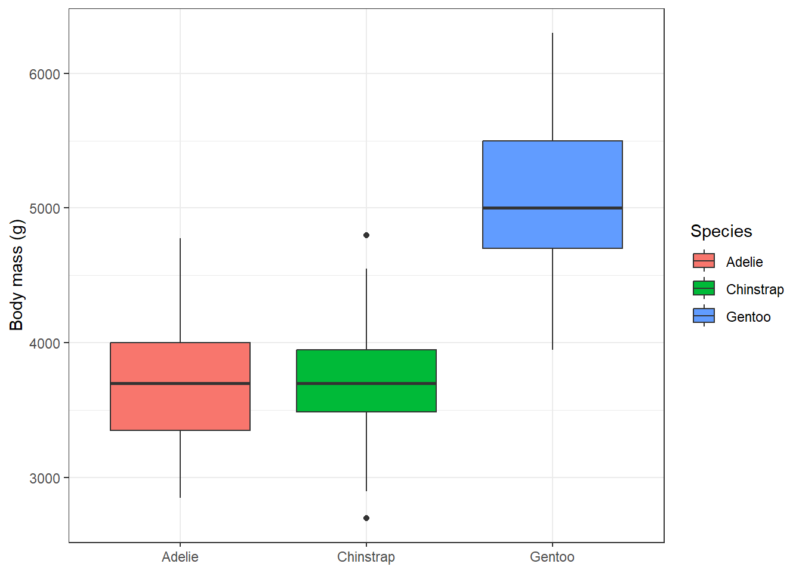
And then combine the two plots together:
p1 + p2
`geom_smooth()` using formula = 'y ~ x'
Warning: Removed 2 rows containing non-finite outside the scale range
(`stat_smooth()`).
Warning: Removed 2 rows containing missing values or values outside the scale range
(`geom_point()`).
Warning: Removed 2 rows containing non-finite outside the scale range
(`stat_boxplot()`).
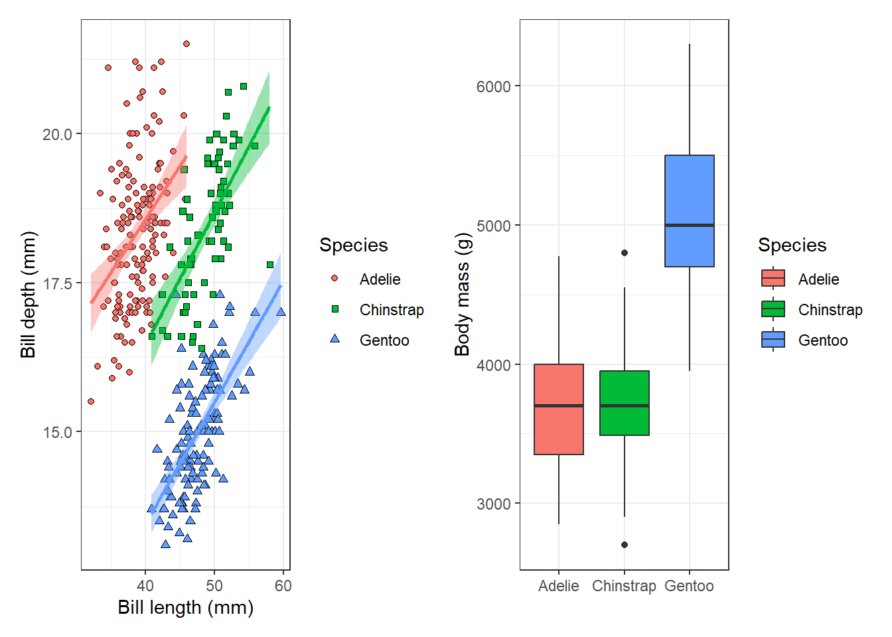
So easy it is. And we can play more with the plot layout. For example, we can adjust the width of each panel in the combined plot.
p1 + p2 +plot_layout(widths =c(2, 1))
`geom_smooth()` using formula = 'y ~ x'
Warning: Removed 2 rows containing non-finite outside the scale range
(`stat_smooth()`).
Warning: Removed 2 rows containing missing values or values outside the scale range
(`geom_point()`).
Warning: Removed 2 rows containing non-finite outside the scale range
(`stat_boxplot()`).
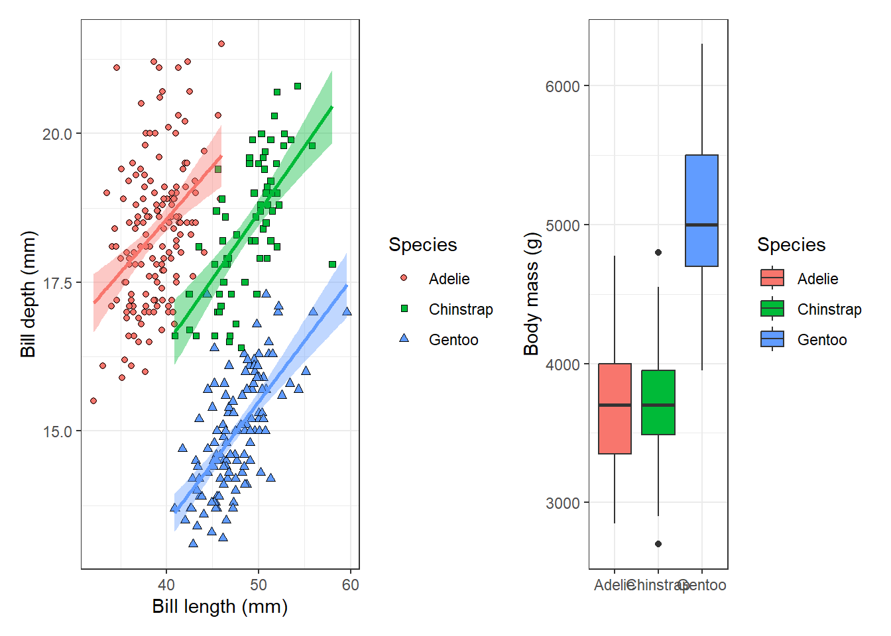
Some useful functionalities of the patchwork package are that you can add annotations to the plots to identify individual panels:
p1 + p2 +plot_annotation(tag_levels ='a')
`geom_smooth()` using formula = 'y ~ x'
Warning: Removed 2 rows containing non-finite outside the scale range
(`stat_smooth()`).
Warning: Removed 2 rows containing missing values or values outside the scale range
(`geom_point()`).
Warning: Removed 2 rows containing non-finite outside the scale range
(`stat_boxplot()`).
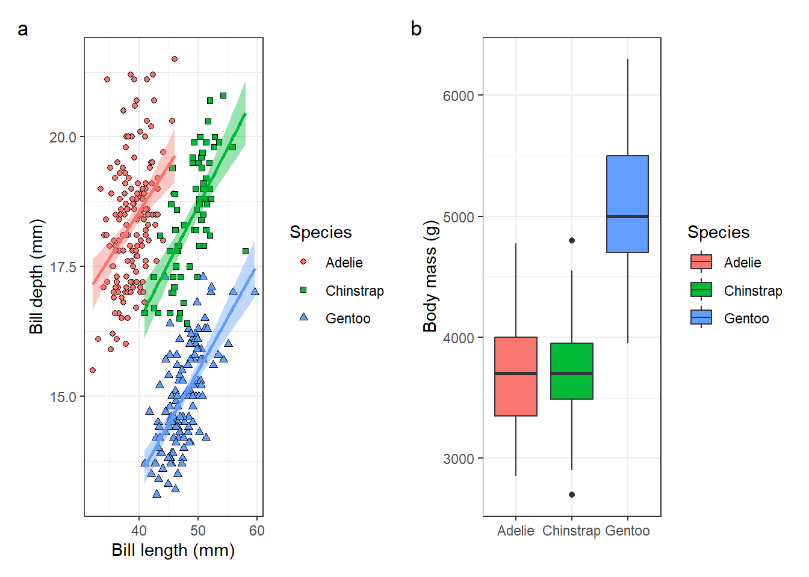
Or collect all legends of the subplots and place them in one place:
p1 + p2 +plot_layout(guides ='collect')
`geom_smooth()` using formula = 'y ~ x'
Warning: Removed 2 rows containing non-finite outside the scale range
(`stat_smooth()`).
Warning: Removed 2 rows containing missing values or values outside the scale range
(`geom_point()`).
Warning: Removed 2 rows containing non-finite outside the scale range
(`stat_boxplot()`).
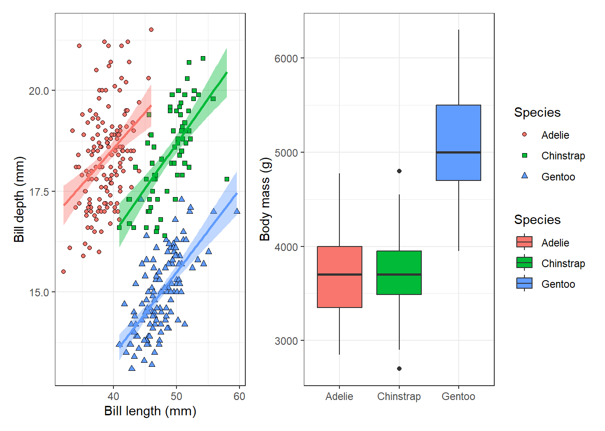
And there are many more options to customise your plot layout, annotations etc.
6.7 Other examples of geom functions
Some other useful geom functions include, geom_pointrage() for showing summary characteristics, or model results.
Warning: Removed 15 rows containing missing values or values outside the scale range
(`geom_text_repel()`).
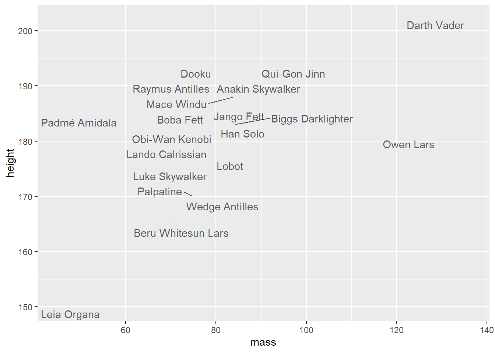
6.8 Useful extensions
It is possible to do almost everything you would imagine using ggplot2 and its extensions. We do not have time to cover all of that during this semester, but you are very welcome to experiment and explore this world on your own.
Just a few tips for packages that you might useful for your work:
ggpubr to make publication-ready plots - some easy-to-use functions for creating and customising ggplot plots
ggeffects to calculate model predictions and plot them (will be replaced by modelbased, but the functionality shouldn’t be lost)
gordi a ggplot-based package for making ordination plots, developed in our group
facet_wrap() facets the plot according to one variable, look in the documentation, what the related function facet_grid() does and use it to make a plot of penguin bill length and bill depth faceted by species and island. Use custom colours and point shapes to distinguish between males and females.
Use the gapminder dataset, from the gapminder package (the dataset will be loaded in the environment once you load the package), which provides values for life expectancy, GDP per capita, and population size for each country of the world. Visualise the relationship between GDP per capita (on a log scale) and life expectancy in 2007. Make the size of the points proportional to the country population size. Highlight the Czech Republic and Slovakia with different colours.
Use the same data as in the previous exercise and create a plot showing the development of life expectancy in the Czech Republic and Slovakia over time.
Use the Pokémon dataset (read_csv('https://raw.githubusercontent.com/rfordatascience/tidytuesday/main/data/2025/2025-04-01/pokemon_df.csv')) and visualise the relationship between Pokémon weight and height. Use logarithmic transformation for both axes. Make all points partly transparent. Highlight 20 Pokémons with the highest attack power by different color and larger point size.
Facet the previous plot according to Pokémon type *and color them using colors from the column color_1.
Use the dataset Axmanova-Forest-understory-diversity-analyses.xlsx from the folder forest_understory (Link to the Github folder) and visualise the relationship between radiation and mean Ellenberg-type indicator values for light. Use custom colours to distinguish forest types and change the labels in the legend to ‘Alluvial’, ‘Oak’, ‘Oak hornbeam’ and ‘Ravine’.
Modify axis labels, legend, colours, etc. of all plots you created so far, so that you like their appearance and save them to the folder plots.
Chapter 7
Combine the two plots from exercises 2 and 3 using p1 / p2. What is the difference compared to p1 + p2? Add annotations ‘A’ and ‘B’ to the panels. Modify the legend so that there is only one legend with coloured points at the bottom.
Calculate mean, minimum and maximum of penguin bill length for each species and visualize it using geom_pointrange(). Order the species according to their mean bill length.
Take the plot from exercise 6, order the categories in legend according to the column forest_type. Move legend to the bottom of the plot.
Use the dataset Axmanova-Forest-understory-diversity-analyses.xlsx from the folder forest_understory (Link to the Github folder) and recreate the following plot:
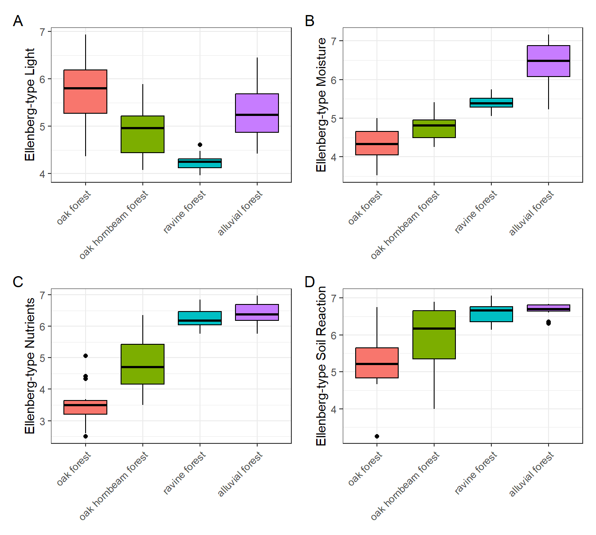
Use the Pokémon dataset (read_csv('https://raw.githubusercontent.com/rfordatascience/tidytuesday/main/data/2025/2025-04-01/pokemon_df.csv')), calculate the mean defense power for each Pokémon type and draw a barplot showing the mean defense power for each type. Order the bars from the highest to the shortest. *Colour the bars according to the colour defined for each Pokémon type in the column color_1. Add errorbars showing the minimum and maximum for each type.
Select electric Pokémons and visualise the relationship between their weight and height. Use their names as text labels instead of points. Do the same for ice Pokémons and then combine both plots together. Add annotations ‘A’ and ‘B’ to the panels.
Modify axis labels, legend, colours, etc. of all plots you created so far, so that you like their appearance and save them to the folder plots.